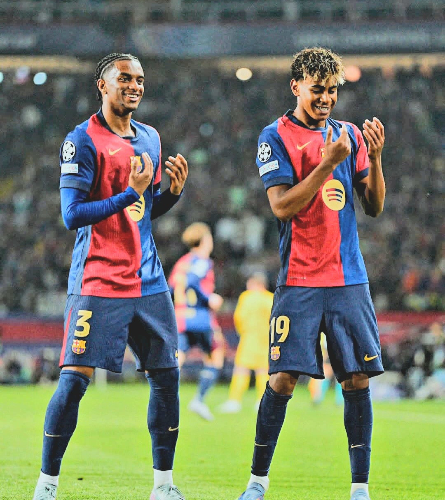

Our Story
Founded in 1899, FC Barcelona is a professional football club based in Barcelona, Catalonia, Spain. Known for its rich history and commitment to excellence, the club has become a symbol of Catalan culture and pride.
With numerous domestic and international titles, including multiple La Liga and UEFA Champions League trophies, FC Barcelona continues to inspire fans worldwide.
